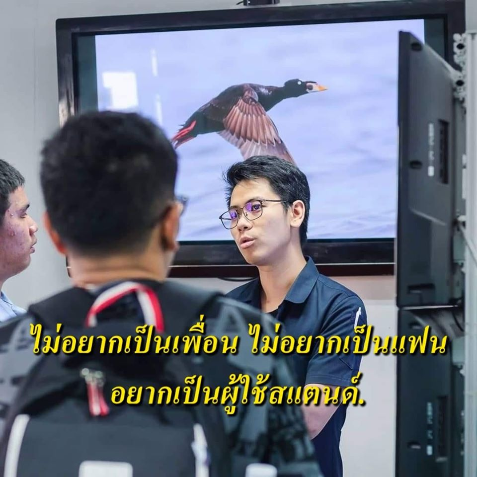

Life of student who suffers in software studio
Compose the pain by Yuttakhan Baingen 60010842
กูนี่เดินลุยป่าเข้าไปเลย อื้มหืม มืด ๆ คนเดียว โอโห้ ฉายไฟฉายลง เห้ย ไม่เจออะไร อ้าว ฉายไฟฉายขึ้น โอโห้ สูงมาก เจอเปรตหรอ ไม่ใช่ เจอต้นตะเคียน โอ้โห เดี๋ยวก่อนนะ ตะเคียนนี่ที่เวลากล้ามเนื้อมันล็อกปะ หะ นั่นมันตะคริว อ๋อ ตะคริวคือที่มันยืนต่อแถวกันเป็นระเบียบ นั่นมันรอคิว อ๋อ เวลาที่พวกต้นไม้มันสังเคราะห์แสง นั่นคลอโรฟิล อ๋อ เวลาที่ศิลปินไม่มีอารมณ์วาดรูป นั่นมันรอฟิล ที่เป็นฝรั่ง นั่นมันคนยิว อ๋อ ละไงต่อ อ๋อ มองขึ้นไปเจอต้นตะเคียนเห้ยทำไมลำต้นมันเนียน ลำต้นมันมีสองลำ ไขว้กันเหมือนสานปลาตะเพียน ขาของแม่งก็เป็นกระดูก ที่นี่แม่งโคตรเหี้ยน เปรตปะ หะ เปรตปะ ใช่ เอ้า ก็ตะ..ตะกี้กูถามบอกเปรตมึงตอบว่าไม่ใช่ไง เฮ้ย เรื่องงี้มึงแม่งเดาง่ายมากเลย เห้ย มึง มึง คืองี้
Back to Contentมารยาททางการสนทนาแม่งทำธรรมดา เพราะมันคือกฏแห่งวาจา ถ้ามึงมีความรู้นิดนึง ใส่ใจคนเล่าติ้ดนึง นั่งเงียบไปวินึง ทำแบบนี้มึงไม่ให้เกียรติคนเล่า คนมันก็จะเศร้า จากนั้นก็จะเน่า แล้วถ้ามึงรู้อีกทีว่ากูอะซ้อมเล่าเรื่องมาสามวัน มึงไม่ถาม มึงซ้อมเล่าเรื่องมาสามวันหรอ กูพูดโอเวอร์เฉย ๆ ปะ โอเวอที่เปนนักบอลอะนะ โอย นั่นมันโอเว่น อ๋อ ที่มันเป็นเครื่องเล่นดีวีดี นั่นมันโซเคน อ๋อ ป้ายหน้าร้านที่แปลว่าให้มึงเข้าไปได้ นั่นมันโอเพ่น อ๋อ สุดยอดท่าไม้ตายในสตรีทไฟท์เตอร์ นั่นโชริวเค่น ในเอ็ก-เมน นั่นมันมิวเท่น อ๋อ
-- A Cursed Person image
ให้กูเล่าได้ยัง เล่าเรื่องผีในป่าพวกมึงแม่งก็ไม่ฟัง อยู่ท่าพระจันทร์ อยู่บ้านละกัน คราวหน้า คือก็อย่างมึงว่าเล่าเรื่องงมงายพวกนี้จากยุคอาม่า แม่งเดินเล่นเดินหลงในป่าแล้วมีผีมาฆ่า แม่งคือสุสานคนกล้า ไม่เหมือนกู
Back to Contentเห้ย มึงได้ยินปะ ได้ยิน อะไรวะ เสียงเหมือนอะไรใหญ่ๆกำลังมาทางนี้ หนีละกัน สตาร์ทรถเลย เชี่ยไม่มีน้ำมัน เข้าสูตรหนังเลย ทำไมมึงไม่พกยันต์ พวกเราควรสลายตัวให้มันคละกัน จะได้ไม่ตาย เหมือนกับใครอยู่ยืนรอดเป็นเป้านิ่ง นี่เข้าใจปะ โอ้โหสุดยอด แผนมึงนี่อัฉริยะสุดๆ จีเนียส ทุกอย่างที่หนังผีห้ามทำ จีเนียสที่เวลาเครียด ๆ ปะ นั่นมันซีเรียส อ๋อ เวลาที่เจ้ามือจับได้ป็อกเก้าปะ นั่นมันกินเรียบ อ๋อ เวลาที่คนแม่งคอรัปชั่น นั่นมันกินเงียบ อ๋อ ที่มันเป็นการ์ตูนญี่ปุ่นตลก นั่นมันกิน..กินไรวะ กินทามะ
โอ้โหอีเหี้ยสุดยอดกูคาราวะ เห้ย รถสตาร์ทติด เอ้ามึงก็ขึ้นมาสิจ้ะ รถมึงรกสัด บางทีมึงก็ชิวไปนะ ตามฟีลไปมะ ถ้ารถมึงเป็นอย่างงี้ ถ้างั้นก็ขอให้ทำใจโสดไปซะ ก็กูมีของต้องขน อย่าขับเร็วสัด มึงจะไปชนต้นสน ตะกี้ไม่มีน้ำมัน นั่นมันสันญาณที่ปัดน้ำฝน กูดูผิด มึงสติวปิด อ๋อ คิวปิด แอนด์มิวสิค ชิวอิค ริวอิค มิวอิค ริวจิ มิฟิวอิค ตะคิวอิค พูดไรวะ กูดัก อ๋อ เป็นภาษาฝรั่งทั้งนั้น กูไม่รู้จัก เห้ย ตัวไรวิ่งตามมาแล้วมึงดูต้นไม้ข้างหลังที่หัก อ๋อ ล้มลงมาอีกแล้ววะเชี้ยยยยย นั่นมันต้นสัก
แม่จ๋าหนูยังไม่อยากตาย อยู่กับซากปรักหักพัง กูบอกแล้วว่าอย่ามา พวกมึงแม่งก็ไม่ฟัง ตอนนี้มาทำเป็นกรี๊ดสะดัง ตอนแรกพวกมึงแต่ละคนเก่งจัง อื้ม ยอมแล้วครับบอส มีบุหรี่มั้ย กูมีแต่ไอคอส เห้ย ไอคอสนี่มัน มึงเล่นมาดิ มึงเล่นมาดิ ตอนนี้ผีไล่มึงเล่นมาดิ ไม่เล่นก็ได้ มึงเล่นให้ได้ดีกว่า ไอคอสเนี่ย มึงเล่นมา ไอคอสนี่เสียงที่เวลาเด็กที่เรียนโรงเรียนอินเตอร์เอานิ้วไปแหย่ปลั๊กปะ หะ
นั่นมันไฟชอร์ตสสส โอโห ไฟชอร์ตแบบมีเอสส ที่มันเป็นซีรี่ย์ที่เกี่ยวกับขายยา นั่นมันนาครอส ติดซีรี่ย์นะพวกมึง อ๋อ เวลาเจไดจะแพ้คนนึงต้องทำยังไง ต้อง Use The Force มึงชอบดูสตาร์วอร์ใช่มั้ยเนี้ย เห้ย ตัวไรขวางทางวะ ตัวโคตรสูง โน โอมายก็อดด
Back to ContentCE KMITL, ยืมไรม์มาแปะครับ (เปรตป่ะ -- TangBadVoice)